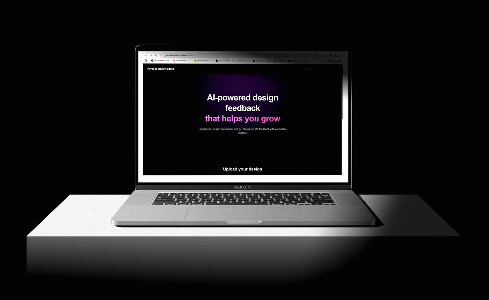

AI Product · Case Study
Portfolio Review Board — AI-инструмент для UX-критики

Junior и middle-дизайнеры часто получают несистемную, субъективную обратную связь. Фидбек зависит от ревьюера, не масштабируется и редко превращается в понятный план роста.
Я спроектировала AI-инструмент, который структурирует UX-оценку, делает её измеримой и переводит критику в систему развития.
Полный цикл разработки продукта: исследование проблемы, UX-архитектура, UI-дизайн, проектирование логики анализа, работа с OpenAI API, реализация интерфейса, деплой.
Проект реализован полностью самостоятельно.
UX-фидбек хаотичен, эмоционален и не даёт измеримой картины уровня дизайна. Не существует инструмента, который разбивает оценку на категории, формирует score и показывает зону роста.
Upload Experience
Минималистичный drag & drop экран. Максимальный фокус на действии без лишнего интерфейсного шума.

AI Structured Analysis
AI разбивает оценку на категории: Visual Hierarchy, Usability, Consistency, Accessibility, Clarity. Каждая категория включает статус, комментарий и конкретную рекомендацию.

Result Interface
Вместо длинного текста — структурированный продуктовый отчёт: общий score из 100, карточки категорий, цветовая система статусов и growth summary.

- Тёмная тема как инструмент фокуса — снижает визуальный шум при анализе
- Карточная система для снижения когнитивной нагрузки
- Score как визуальный якорь измеримости результата
- Логика: Motivation → Action → Analysis → Reflection → Repeat
- Создан работающий MVP с реальным AI-анализом
- Сформирован UX-фреймворк для структурированной оценки дизайна
- Разработана масштабируемая структура SaaS-интерфейса
- Продукт задеплоен и доступен онлайн